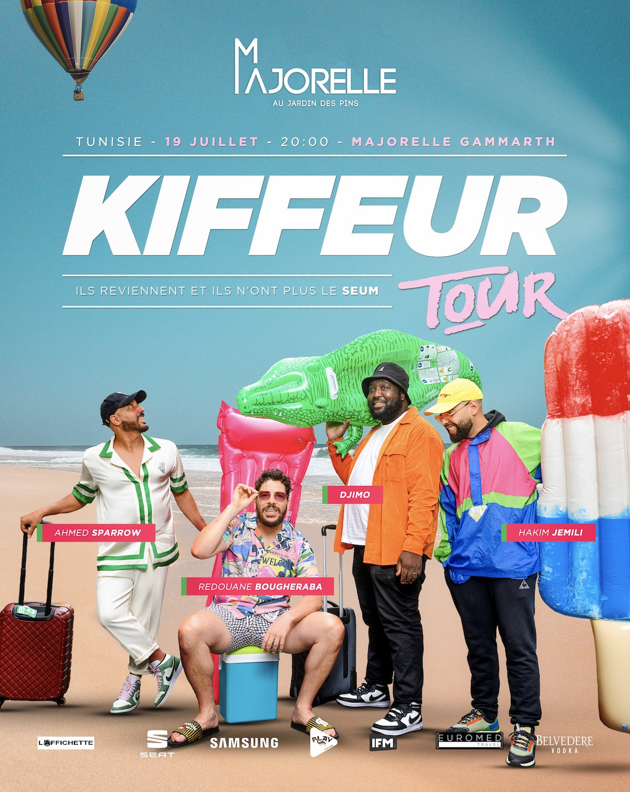
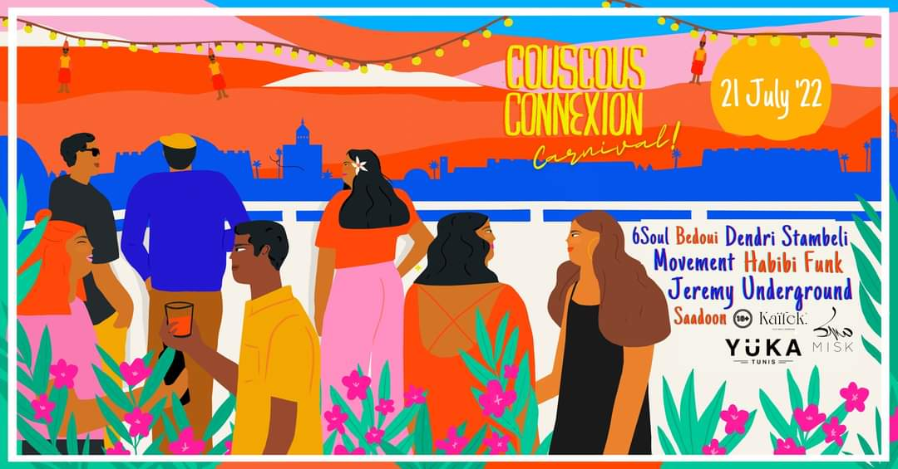
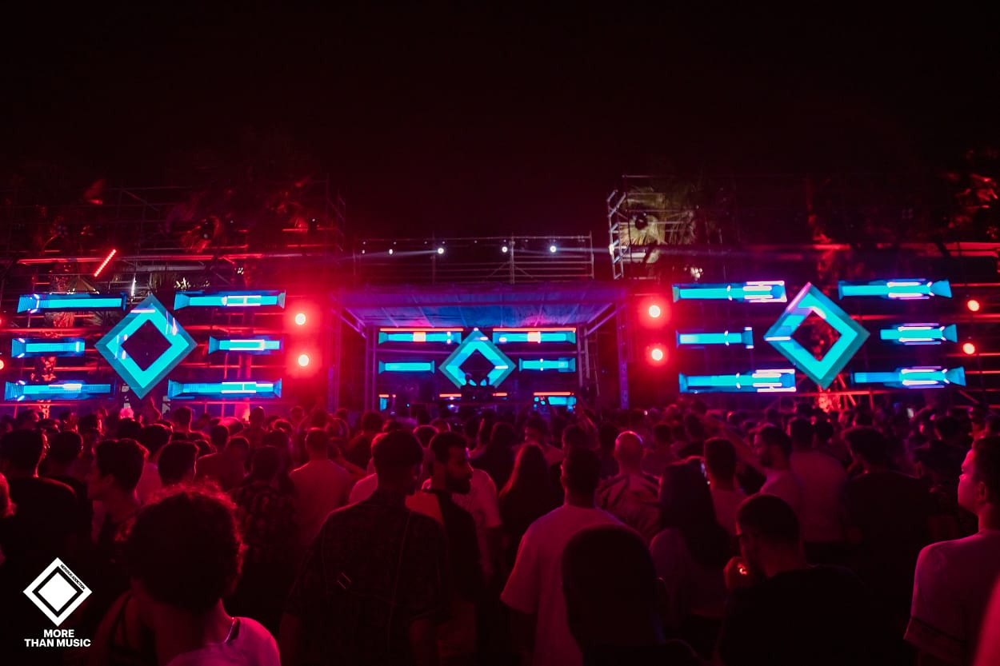

| LUN 18 | 18 juillet 2022 @ 18 h 00 min - 19 juillet 2022 @ 4 h 00 min 3ochag Eddenya fil Yüka 18 Juillet Yuka Yuka Gammarth, Gammarth Plus de place disponibles 63.000DT à 95.000DT |  |
|---|---|---|
| MAR 19 | 19 juillet 2022 @ 21 h 00 min - 23 h 00 min Kiffeur Tour La Majorelle Gammarth Pour reserver votre siège cliquer ici : |  |
| JEU 21 | 21 juillet 2022 @ 16 h 00 min - 22 juillet 2022 @ 4 h 00 min Couscous Connexion Carnival w/ Jeremy Underground, Habibi Funk, Dendri Stambeli Movement, 6Soul Yuka Yuka Gammarth, Gammarth We are beyond excited to be uniting some of our favourite artists for a Tunisia-inspired carnival at the capital's renowned beachside venue, Yüka Tunis. Together, we will celebrate the beauty […] Obtenir Billets 33.000DT à 43.000DT |  |
| VEN 22 | 22 juillet 2022 @ 18 h 00 min - 23 juillet 2022 @ 4 h 00 min Nervous Addiction w/ More Than Music Le Carpe Diem Le Carpe Diem - Tunis Obtenir Billets 50.000DT à 90.000DT |  |
| LUN 18 | 18 juillet 2022 @ 18 h 00 min - 19 juillet 2022 @ 4 h 00 min 3ochag Eddenya fil Yüka 18 Juillet Yuka Yuka Gammarth, Gammarth Plus de place disponibles 63.000DT à 95.000DT | |
|---|---|---|
| MAR 19 | 19 juillet 2022 @ 21 h 00 min - 23 h 00 min Kiffeur Tour La Majorelle Gammarth Pour reserver votre siège cliquer ici : | |
| JEU 21 | 21 juillet 2022 @ 16 h 00 min - 22 juillet 2022 @ 4 h 00 min Couscous Connexion Carnival w/ Jeremy Underground, Habibi Funk, Dendri Stambeli Movement, 6Soul Yuka Yuka Gammarth, Gammarth We are beyond excited to be uniting some of our favourite artists for a Tunisia-inspired carnival at the capital's renowned beachside venue, Yüka Tunis. Together, we will celebrate the beauty […] Obtenir Billets 33.000DT à 43.000DT | |
| VEN 22 | 22 juillet 2022 @ 18 h 00 min - 23 juillet 2022 @ 4 h 00 min Nervous Addiction w/ More Than Music Le Carpe Diem Le Carpe Diem - Tunis Obtenir Billets 50.000DT à 90.000DT |
| LUN 18 | 18 juillet 2022 @ 18 h 00 min - 19 juillet 2022 @ 4 h 00 min 3ochag Eddenya fil Yüka 18 Juillet Yuka Yuka Gammarth, Gammarth Plus de place disponibles 63.000DT à 95.000DT | |
|---|---|---|
| MAR 19 | 19 juillet 2022 @ 21 h 00 min - 23 h 00 min Kiffeur Tour La Majorelle Gammarth Pour reserver votre siège cliquer ici : | |
| JEU 21 | 21 juillet 2022 @ 16 h 00 min - 22 juillet 2022 @ 4 h 00 min Couscous Connexion Carnival w/ Jeremy Underground, Habibi Funk, Dendri Stambeli Movement, 6Soul Yuka Yuka Gammarth, Gammarth We are beyond excited to be uniting some of our favourite artists for a Tunisia-inspired carnival at the capital's renowned beachside venue, Yüka Tunis. Together, we will celebrate the beauty […] Obtenir Billets 33.000DT à 43.000DT | |
| VEN 22 | 22 juillet 2022 @ 18 h 00 min - 23 juillet 2022 @ 4 h 00 min Nervous Addiction w/ More Than Music Le Carpe Diem Le Carpe Diem - Tunis Obtenir Billets 50.000DT à 90.000DT |